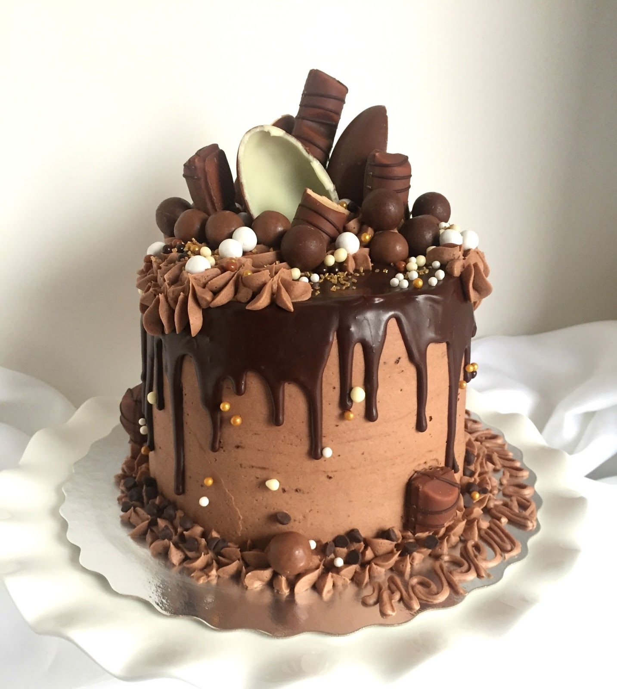

Cakes - Birthday Mr Dlamini 2018
From R250 Small | R450 Medium | R650 Large
Cakes for birthdays, celebrations, family gatherings. Sold out yesterday 10am 2026!
Enquire About Cakes - 123 Main RoadFreshly Baked Goodness Every Day - Blue door 8a Rosebank Baked 5am - Checkers bag R10 - Gogo recipe page 12 stain
Discover freshly baked goodness for every occasion - Baked 3am - Sold out yesterday 10am 2026 - EST 2019 Made with Flour not AI

Jo's Bakery offers a variety of baked products for individuals, families and businesses. 123 Main Road Rosebank 0181 - 5 min walk Rosebank College Family 2018-2020.

From R250 Small | R450 Medium | R650 Large
Cakes for birthdays, celebrations, family gatherings. Sold out yesterday 10am 2026!
Enquire About Cakes - 123 Main Road
R20 Each | Box 6 - R110 | Box 12 - R200
Sweet cupcakes suitable for parties, celebrations, events and everyday treats.
Enquire About Cupcakes
White/Brown R25 | Wholewheat R30 | Buns R35
Bread for everyday meals, breakfasts, lunches and family occasions. Baked before city wakes up.
Enquire About Bread
Chicken/Beef R35 | Family Pie R120 | Mini R18
Savoury and sweet pie options for snacks, meals and gatherings. Thabo icing argument!
Enquire About Pies
Banana Cake Slice R30 | Whole R220 | Croissant R22
A selection of pastries to enjoy with family, friends or at special events. Gogo recipe book 1970 lucky never cleaned.
Enquire About Pastries
R12 Each | Box 6 R65 | Box 12 R120
Sawubona! Fresh cookies daily - Family 2018-2020 - EST 2019 Made with Flour not AI.
Enquire About Cookies
Custom Cakes from R350 - Birthday Mr Dlamini 2018
Planning a birthday, anniversary or another special occasion? Phone 012 345 6789 - WhatsApp 072 123 4567 - 123 Main Road Rosebank 0181 - EST 2019 Made with Flour not AI
Make an Enquiry - Rosebank 0181